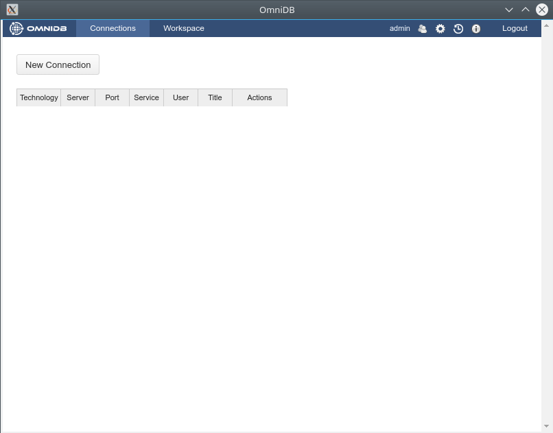
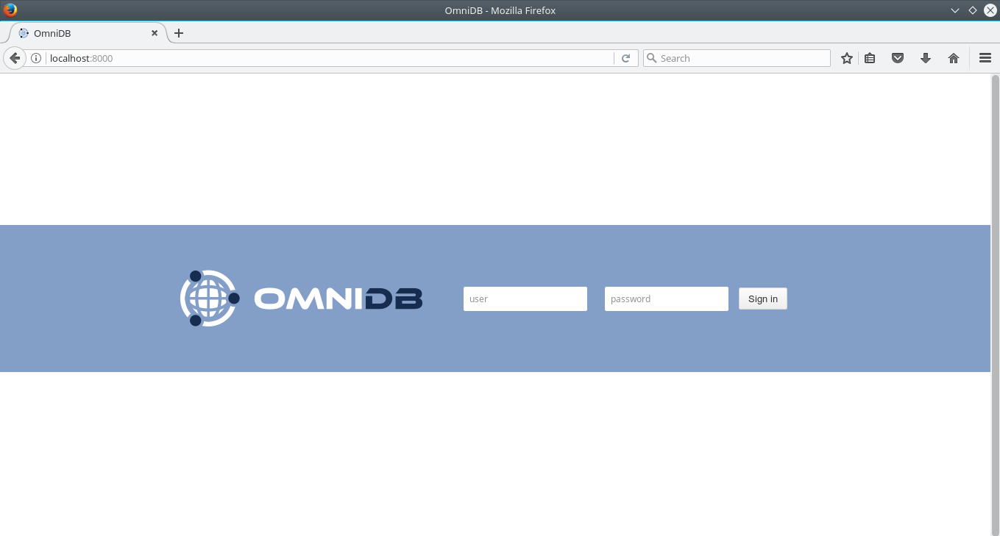

OmniDB fornece 2 tipos de pacotes para atender a todas as necessidades dos usuários:
Tanto o OmniDB Application quanto o OmniDB Server podem ser instalados na mesma máquina.
Para executar o aplicativo OmniDB, você não precisa instalar nenhuma peça adicional de software. Basta dirigir-se a omnidb.org e baixar o pacote mais recente para seu sistema operacional específico e arquitetura:
• Linux 32 bits / 64 bits
- instalador DEB
- instalador RPM
- Tarball
• Windows 32 bits / 64 bits
- instalador EXE
- pacote ZIP
• Mac OS X
- Instalador DMG
- pacote ZIPSe você escolhe pacotes tarball ou zip, basta extraí-lo em algum lugar do seu computador. Entre na pasta criada e abra o executável do omnidb-app. Ele abrirá OmniDB dentro de sua própria janela.
Com o instalador, você pode instalar o OmniDB no seu sistema, e estará disponível através do menu do seu aplicativo de ambiente de trabalho. Quando você abri-lo o OmniDB abrirá sua própria janela.

Como o OmniDB app, o OmniDB Server não requer nenhuma peça adicional de software e as mesmas opções para sistema operacional e arquitetura são fornecidas. Se você escolher o tarball ou o pacote zip, extraia-o em algum lugar do seu computador. Entre na pasta descompactada e abra o executável omniDB-server.
User@machine:~$ cd omnidb-server
User@machine:~ / omnidb-server$ ./omnidb
Iniciando o OmniDB 2.0.2 em http://localhost: 8000
Abra OmniDB no seu navegador favorito
Pressione Ctrl + C para sairPara instalar o OmniDB Server, você precisará de privilégios de administrador:
User@machine:~ $ sudo omnidb-server
Iniciando o OmniDB 2.0.2 em http: // localhost: 8000
Abra OmniDB no seu navegador favorito
Pressione Ctrl + C para sairAgora que o servidor web está em execução, você pode acessar o aplicativo da web OmniDB em seu navegador favorito. Digite na barra de endereços: localhost: 8000 e tecle Enter. Se tudo correu bem, você verá uma página como esta:

Agora você sabe que o OmniDB está funcionando corretamente. Nos próximos capítulos, nós veremos como fazer o login pela primeira vez, como criar um usuário e utilizar OmniDB.